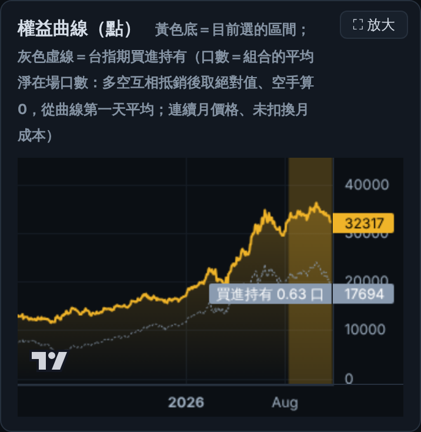
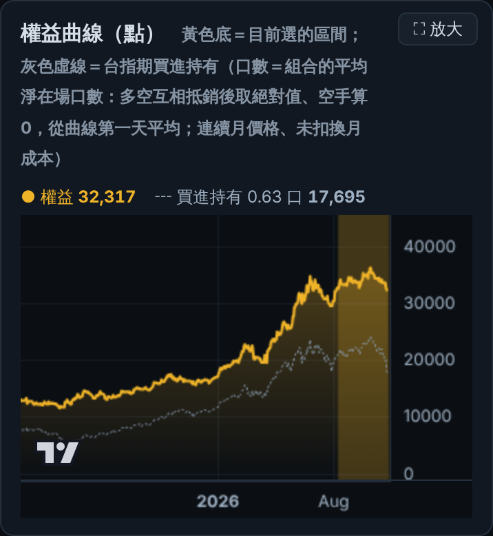
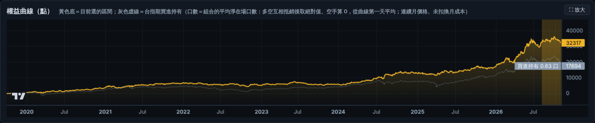
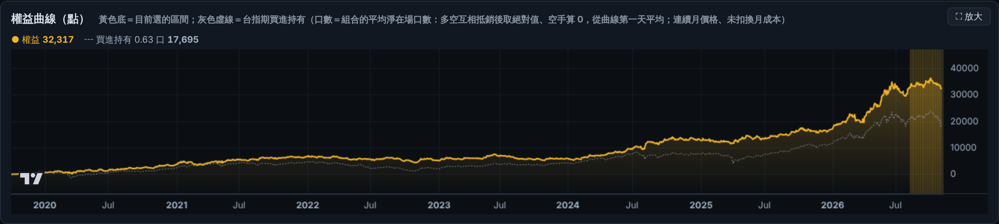
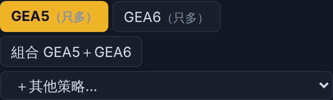
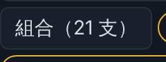

會員站小瑕疵（預覽）
W 11-09 member_shot 發現的兩處；檔案＝CustomerServiceANDSales
research/preview_b/index.html（會員站前端，W 用 tools/member_push.py 上傳）。截圖是本機預覽模式跑同一份程式改過的版本；正式檔還沒動，Evans 點頭才套、由 W 上傳。B1 權益曲線右側價格標籤壓到刻度
原因：圖表元件（Lightweight Charts）把「最後值」標籤畫在價格軸上，會蓋住剛好在附近的刻度（390 寬時 32317 蓋 30000、買進持有 17694 蓋 20000；1366 寬也一樣，只是比較不明顯）。
改法：價格軸上不放最後值標籤，改在圖上方一行寫「● 權益 32,317 ┅ 買進持有 0.63 口 17,695」；圖內「買進持有 0.63 口」浮框也拿掉（併進這一行）。盤中更新、⛶ 放大都會跟著重算。各尺寸一致。




B2 管理者「組合」按鈕是全部策略名稱串成一長段
改法：組合成分 ≤ 3 支照舊寫名稱（客戶常見的「組合 GEA5＋GEA6」不變）；超過 3 支只寫「組合（N 支）」，完整名單放在滑過提示（title）。兩種樣子都示範（管理版的策略名稱不放公開網址，只截按鈕）。


要看的重點／要決定
- B1：最後值改在圖上方一行，桌機也一起改（不然 1366 一樣會蓋刻度）——可以嗎？
- B2：「超過 3 支就只寫支數」門檻 3 可以嗎？
- 點頭後：套進
research/preview_b/index.html（改動 5 處，diff 寫在 TODO「雲端O 11-09」），W 跑 member_push 上傳，再用 member_shot.yml 兩個帳號各截一次驗收。